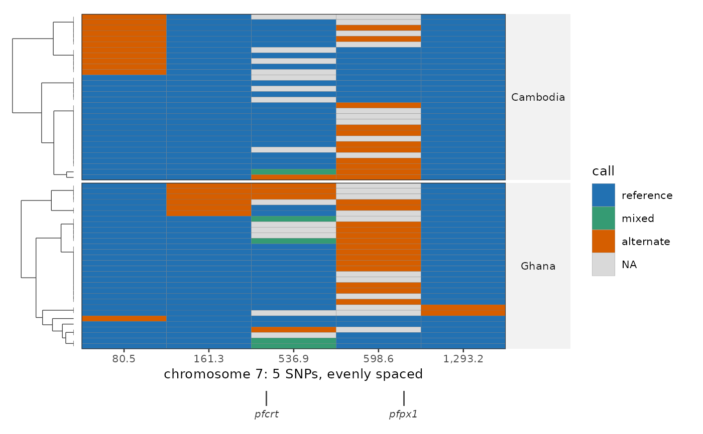

Genotypes over one region, clustered by sample
Source:R/plot_region_haplotypes.R
plot_region_haplotypes.RdA genotype heatmap for a single interval: one row per sample, one column per SNP, with the samples clustered and a dendrogram beside them, and a gene track underneath. Splitting the rows by a metadata column fixes the blocks and clusters within each one, so a haplotype shared across a group shows up as a solid band rather than being scattered by a genome-wide ordering.
Usage
plot_region_haplotypes(
x,
region,
split = NULL,
annotations = NULL,
genotypes = NULL,
samples = NULL,
spacing = c("even", "genomic"),
cluster = TRUE,
dendrogram = TRUE,
dend_width = 0.15,
border = TRUE,
border_colour = "grey45",
allele = NULL,
mark_snps = NULL,
mark_colour = "#B2182B",
genes = NULL,
gene_track = NULL,
gene_label_angle = 0,
pad = 0,
min_span = 0,
max_snps = 2000,
snp_width = NULL,
colours = NULL,
na_colour = "grey85",
show_sample_names = NULL,
reference = DEFAULT_REFERENCE
)Arguments
- x
A PopStructure object (its genotypes supply the calls, its metadata the split).
- region
The interval to draw: a gene name from
genes, a range ("13:1,720,000-1,730,000"), a whole chromosome, or a one-row data frame with chr/start/end.- split
Optional metadata column whose levels block the rows. Samples are clustered inside each block, and the blocks keep the column's level order.
- annotations
Optional metadata columns to draw as coloured strips down the right, one column each, sharing the object's colour maps (see
meta_colors()) so a level keeps the colour it has in the other plots. Each gets its own legend.- genotypes
Optional alternative calls to draw: a genotype matrix (samples x SNPs with
chr:poscolumn names), aload_genotypes()list, or another PopStructure.NULL(default) usesx's own matrix. Metadata, grouping and the active sample set always come fromx, so one pruned object can supply the annotations while the full panel supplies the calls – which is the combination this plot wants.- samples
Optional sample ids to keep.
- spacing
"even"(default) gives every SNP equal width;"genomic"places each at its real coordinate.- cluster
Cluster the samples (default
TRUE).FALSEkeeps them in the order they arrive, which is worth doing when the metadata order is the point.- dendrogram
Draw the dendrogram beside the rows (needs
cluster).- dend_width
Width of the dendrogram panel, as a fraction of the heatmap's.
- border
Outline every call (default
TRUE), which is what makes single SNPs readable as cells rather than a wash of colour.- border_colour
Colour of that outline.
- allele
Which allele the dosages count,
"alt"or"ref".NULL(default) asks the object; if it does not record it, alt is assumed and a message says so. The two are indistinguishable from the matrix, and getting it backwards mislabels every call.- mark_snps
Optional SNPs to mark with a vertical line:
chr:posids, bare positions, or a gene name fromgenes(marking every SNP in it).- mark_colour
Colour for those lines.
- genes
Gene table for the track and for resolving names (e.g. PF3D7_GENES).
- gene_track
Draw the gene track under the heatmap (default
TRUEwhengenesis given). Under"even"spacing the boxes are mapped onto the SNP columns they cover, so the track still says which columns sit in which gene.- gene_label_angle
Rotation for the gene names, in degrees;
45or90keeps long systematic ids from colliding.- pad, min_span
Context around
region, as inplot_ibd_locus(): one value pads both sides, two the left and the right (namedleft/rightif you like).- max_snps
Refuse to draw more than this many columns (default 2000). A window with thousands of SNPs is unreadable as tiles; narrow it rather than have it silently thinned.
- snp_width
Width of each mark under
"genomic"spacing, in base pairs.NULL(default) uses 0.5% of the window, wide enough to see and narrow enough to leave the gaps between SNPs visible.- colours
Named fill colours for
reference/mixed/alternate.- na_colour
Fill for missing calls.
- show_sample_names
Label the rows.
NULL(default) labels them when there are at most 40 samples.- reference
Reference id, used when
regionnames a whole chromosome.
Value
A patchwork of the dendrogram, heatmap and gene track, or a plain ggplot when neither of those two is drawn.
Details
The genotypes should be the full panel, not an LD-pruned one. Pruning keeps one SNP out
of each correlated run, and a correlated run is what a shared haplotype is – so a pruned
panel shows fewer SNPs, chosen to be as uncorrelated as possible, and the blocks come out
thinner than they are. Build the object with load_genotypes(prune = FALSE) for this plot
and keep the pruned one for PCA / UMAP / admixture, where pruning is what you want; the
plot says so when the object records that it was pruned.
spacing decides what the horizontal axis means, and the two answers show different
things. "even" gives every SNP the same width, which is how the haplotype structure is
easiest to read but says nothing about distance. "genomic" puts each SNP at its real
coordinate, so a dense cluster of SNPs looks dense – correct about position, but sparse
stretches become wide empty bands.
Examples
ps <- example_pop_structure(umap = FALSE)
plot_region_haplotypes(ps, "7", split = "country", genes = PF_EXAMPLE_DRUG_GENES)
